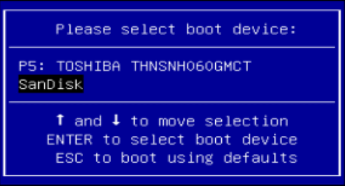
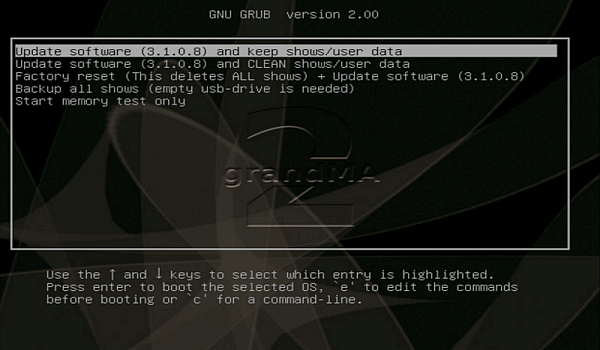

This topic describes how to update the grandMA2 software or do a factory reset via the boot menu.
Important:
Before you start to update your grandMA2 software or doing a factory reset, save your show files and any other user created data on a USB stick. If you do not save the show files first, the show files can be deleted or broken and cannot be recoverd anymore.
Requirements: A Linux formatted USB stick with a software vesion. For more information, see format a USB stick.
Insert the formatted USB stick at a USB port on the grandMA2 console or grandMA2 RPU.
To turn the console on, press the power button.
When the startup screen appears, have a look the last sentence on the bottom of the screen. This sentence tells what key you have to press to go to the boot menu. It could be F8, F11, F12, or Esc.
Important:
If the console asks to press F11 or F12 and you have no external keyboard connected, connect an external keyboard.
Press the key several times until the boot menu appears.

Select boot device
Select you USB stick and press Enter or Please.
The MA installer screen opens.

MA installer screen
Choose one of the following options:
- If you want to update and keep the show data, choose update software and keep shows/user data.
The touch screen calibration, the network station name, and the IP address will be remained.
- If you want to update and delete the show data, choose update software and CLEAN shows/user data.
The touch screen calibration, the network station name, and the IP address will be remained.
- If you want to update on a clean hard drive, choose factory reset.
The hard drive will get a new partition and it will be formatted. All data will be deleted.
You have to calibrate the touch screens. The factory reset will set a DHCP IP address.
- If you want to backup all show files first before doing an update or factory reset, choose backup all shows.
- The memory test is for service members only.